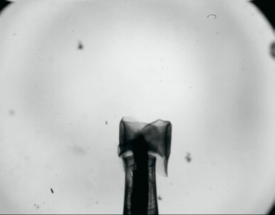
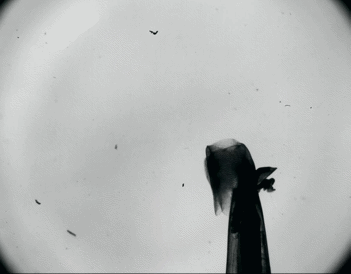
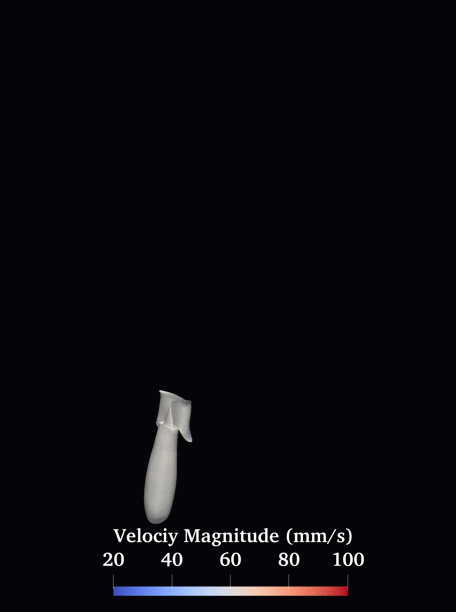
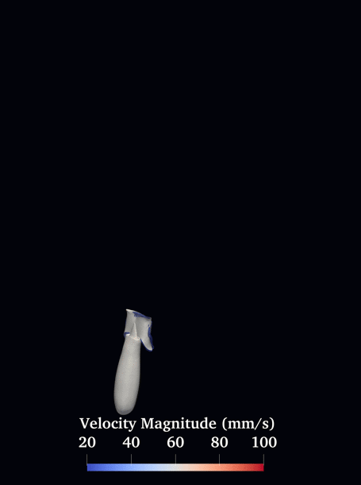
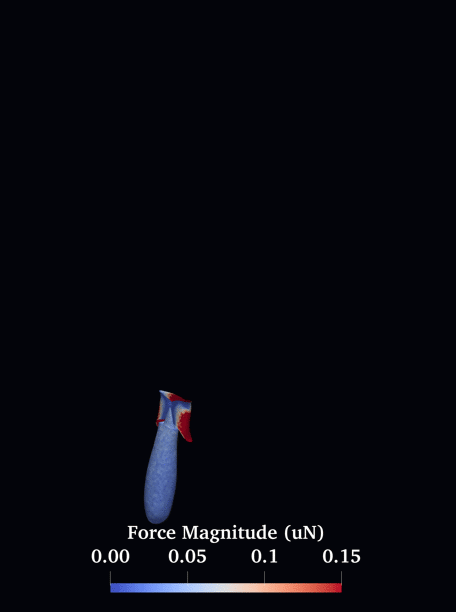
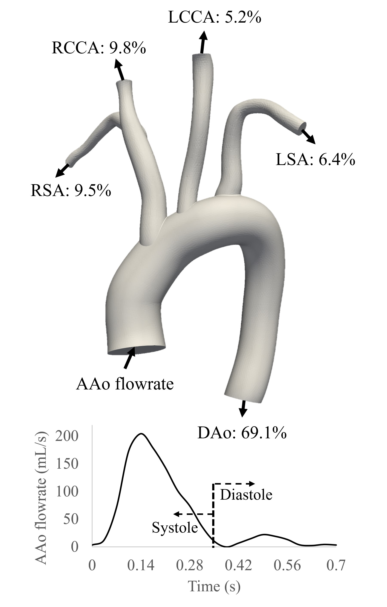
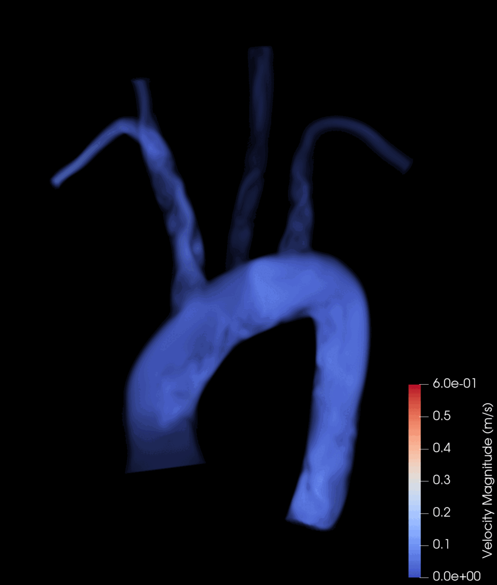
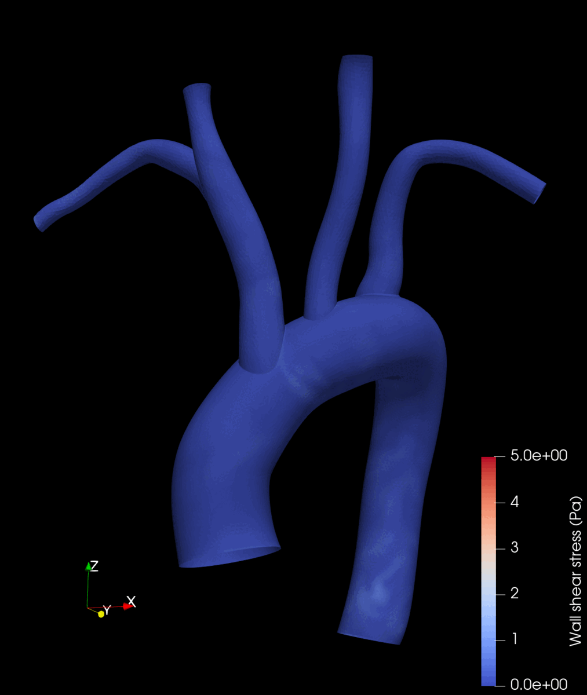

Zongze Li
ABOUT ME:
Hello! Thank you for visiting my website!
I am a Ph.D. in Mechanical Engineering specializing in physics-based modeling and simulation, including computational fluid dynamics (CFD), multiphysics modeling, fluid-structure interaction (FSI), and AI-accelerated modeling. My work focuses on developing high-fidelity simulation frameworks and scalable C++/MPI solvers in HPC environments to study complex phenomena such as fluid flow, heat transfer, and thermal dynamics.
With a strong background in computational physics, numerical methods, and algorithm development, I enjoy building efficient end-to-end simulation tools that support engineering design, performance optimization, and decision-making. I am particularly interested in bridging physics-based modeling with data-driven approaches, enabling AI systems to better understand and predict real-world physical behavior.
My technical experience includes ANSYS, COMSOL, Palabos, MATLAB, ParaView, Python, Linux, and HPC workflows. I enjoy translating advanced numerical methods into practical engineering solutions across multidisciplinary applications.
Beyond work and research, I am passionate about technology and lifelong learning. I enjoy building home labs and personal servers, experimenting with cloud storage solutions such as Samba and NAS, developing machine-learning-powered photo management systems, and exploring AI techniques including Physics-Informed Neural Networks (PINNs). These hands-on projects have allowed me to expand beyond traditional engineering into software and system-level development.
I value collaboration and knowledge sharing. As a workshop lecturer and peer reviewer in CFD-related fields, I enjoy contributing to the community and tackling meaningful engineering and technological challenges.
Simulation and Modeling
Computational Fluid Dynamics (CFD), Finite Element Analysis/Method (FEA/FEM), Computer-Aided Engineering (CAE), Engineering Analysis, Verification & Validation, Fluid-Structure Interaction (FSI), Lattice Boltzmann Method (LBM), Multi-Physics Simulation (Thermal-Fluid-Solid Coupling), Numerical Method Stabilization, ODE/PDE Discretization, End-to-end simulation workflow (CAD to Simulation to Analysis), Parametric and Design-Space Studies, Post-Processing Automation
Simulation Tools/Software
ANSYS Fluent, COMSOL, Palabos, SolidWorks, AutoCAD, Blender, Fusion 360, ImageJ, MeshLab, MATLAB, Paraview
Programming
Algorithm Development, C++, High Performance Computing (HPC), HTML, JAVA, Linux, Microsoft Visual Studio, Python, Message Passing Interface (MPI)
Laboratory
2D Laser Cutting, 3D Printing, CNC Milling, Drilling, Milling, Particle Image Velocimetry (PIV)
Powered by busuanzi
MPI-Accelerated LBM–FSI Simulation of Sea Butterfly Propulsion





This fascinating organism swims in the intermediate Reynolds number regime, where fluid dynamics exhibit complex and intricate flow behaviors. Understanding its propulsion strategies can provide valuable insights for the design of bio-inspired underwater robots.
To investigate these mechanisms, we reconstructed the wing kinematics from high-speed experimental videos provided by Dr. Murphy's lab and developed an in-house customized fluid-structure interaction (FSI) package based on Palabos. The framework incorporates fully coupled fluid-solid interaction and achieves stable simulations even for solid-to-fluid density ratios as low as 0.1.
Using MPI-parallelized simulations, we reconstructed detailed flow fields around the swimming Cuvierina Atlantica, including velocity distributions, vortex structures visualized by the Q-criterion, and hydrodynamic forces acting on both the wings and body. This work provides new insights into bio-inspired propulsion mechanisms and contributes to the development of next-generation underwater robotic systems.
This research was published in Physics of Fluids and was selected as a Scilight article. See news here
Patient-Specific Aortic Flow Simulation with Windkessel-Coupled LBM




Cardiovascular diseases remain one of the leading health concerns worldwide, yet modern clinical imaging techniques often lack the resolution needed to fully characterize the complex hemodynamics within the circulatory system. Computational fluid dynamics (CFD) offers a powerful complementary approach, enabling detailed visualization and quantitative analysis of patient-specific blood flow.
In this work, we demonstrate that high-fidelity aortic hemodynamics can be reconstructed using only four patient-specific inputs: aortic geometry, inlet flow rate, systolic/diastolic blood pressure, and outlet flow distribution ratios. This efficient framework enables accurate simulation of patient-specific cardiovascular flows while requiring only routinely available clinical data.
The resulting simulations provide rich insight into cardiovascular function through detailed velocity fields, wall shear stress distributions, and λ₂ vortex structures colored by velocity magnitude. Such computational tools have the potential to support clinical diagnosis, treatment planning, and personalized medicine.